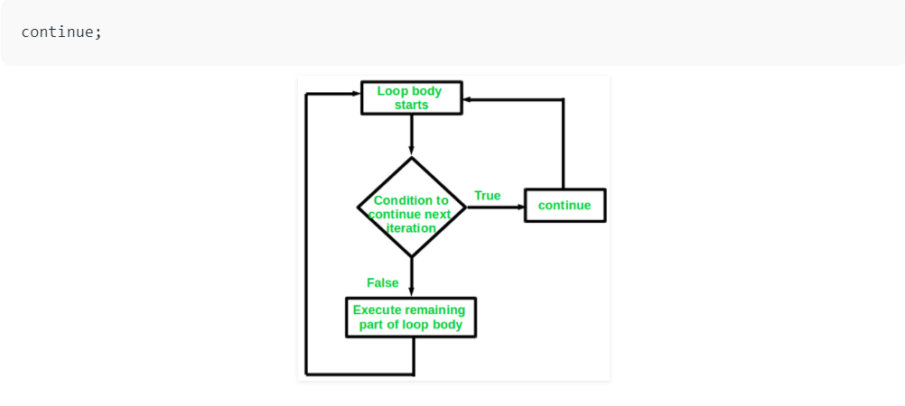

Summary
- Introduction to C Programming
- Variables and Keywords
- Datatypes
- Constants
- Operators
- Control Statements
- goto statement
- Switch Statement
- break Statement
- Continue Statement
- Loops
- Functions
- Calling Functions
- Library Functions
- Recursion
- Storage Classes
- Array
- Pointers
- Pointer to Pointer
- Strings
Introduction to C Programming
'C' is a procedural programming language. It was initially developed by Dennis Ritchie in the year 1972. It was mainly developed as a system programming language to write an operating system. The main features of the C language include low-level memory access, a simple set of keywords, and a clean style, these features make C language suitable for system programmings like an operating system or compiler development. Many later languages have borrowed syntax/features directly or indirectly from the C language. Like syntax of Java, PHP, JavaScript, and many other languages are mainly based on the C language. C++ is nearly a superset of C language (Few programs may compile in C, but not in C++).
Beginning with C programming:
1. Structure of a C Program:
After the above discussion, we can formally assess the structure of a C program. By structure, it is meant that any program can be written in this structure only. Writing a C program in any other structure will hence lead to a Compilation Error. The structure of a C program is as follows:

2. Header Files Inclusion:
The first and foremost component is the inclusion of the Header files in a C program. A header file is a file with extension .h which contains C function declarations and macro definitions to be shared between several source files. Some of C Header files: 1. stdio.h – Defines core input and output functions 2. stdint.h – Defines exact width integer types. 3. stdlib.h – Defines numeric conversion functions, pseudo-random network generator, memory allocation 4. string.h – Defines string handling functions 5. math.h – Defines common mathematical functions
3. Main Method Declaration:
The next part of a C program is to declare the main() function. The syntax to declare the main function is: Syntax to Declare the main method:
int main()
{}
4. Variable Declaration:
The next part of any C program is the variable declaration. It refers to the variables that are to be used in the function. Please note that in the C program, no variable can be used without being declared. Also in a C program, the variables are to be declared before any operation in the function. Example:
int main()
{
int a;
5. Body:
The body of a function in the C program, refers to the operations that are performed in the functions. It can be anything like manipulations, searching, sorting, printing, etc. Example:
int main()
{
int a;
printf('%d";, a);
6. Return Statement:
The last part of any C program is the return statement. The return statement refers to the returning of the values from a function. This return statement and return value depend upon the return type of the function. For example, if the return type is void, then there will be no return statement. In any other case, there will be a return statement and the return value will be of the type of the specified return type. Example:
int main()
{
int a;
printf("%d";, a);
return 0;
}
Variables and Keywords
Variables and Keywords in C
A variable in simple terms is a storage place which has some memory allocated to it. Basically, a variable used to store some form of data. Different types of variables require different amounts of memory, and have some specific set of operations which can be applied on them.
1.Variable Declaration:
A typical variable declaration is of the form:
type variable\_name;
or for multiple variables:
type variable1\_name, variable2\_name, variable3\_name;
A variable name can consist of alphabets (both upper and lower case), numbers and the underscore '_' character. However, the name must not start with a number.
2.Difference b/w variable declaration and definition
Variable declaration refers to the part where a variable is first declared or introduced before its first use. Variable definition is the part where the variable is assigned a memory location and a value. Most of the times, variable declaration and definition are done together.
See the following C program for better clarification:
#include <stdio.h>
int main()
{
// declaration and definition of variable 'a123'
char a123 = 'a';
// This is also both declaration and definition as 'b' is allocated
// memory and assigned some garbage value.
float b;
// multiple declarations and definitions
int _c, _d45, e;
// Let us print a variable
printf("%c \n", a123);
return 0;
}
Output:
a
3.Rules for defining variables
A variable can have alphabets, digits, and underscore.
A variable name can start with the alphabet, and underscore only. It can't start with a digit.
No whitespace is allowed within the variable name.
A variable name must not be any reserved word or keyword, e.g. int, goto , etc.
4.Types of Variables in C
1. Local Variable
A variable that is declared and used inside the function or block is called local variable.
It's scope is limited to function or block. It cannot be used outside the block.Local variables need
to be initialized before use.
Example –
#include <stdio.h>
void function() {
int x = 10; // local variable
}
int main()
{
function();
}
In the above code x can be used only in the scope of function() . Using it in main function will give error.
2. Global Variable
A variable that is declared outside the function or block is called a global variable.
It is declared at the starting of program. It is available to all the functions.
Example –
#include <stdio.h>
int x = 20;//global variable
void function1()
{
printf("%d\n" , x);
}
void function2()
{
printf("%d\n" , x);
}
int main() {
function1();
function2();
return 0;
}
Output
20
20
In the above code both the functions can use global variable x as we already global variables are accessible by all the functions.
3.Static Variable
A variable that retains its value between multiple function calls is known as static variable.
It is declared with the static keyword.
Example-
#include <stdio.h>
void function(){
int x = 20;//local variable
static int y = 30;//static variable
x = x + 10;
y = y + 10;
printf("\n%d,%d",x,y);
}
int main() {
function();
function();
function();
return 0;
}
Output
30,40
30,50
30,60
In the above example , local variable will always print same value whenever function will be called whereas static variable will print the incremented value in each function call.
Scope
A scope is a region of the program, and the scope of variables refers to the area of the program where the variables can be accessed after its declaration.
In C every variable defined in scope. You can define scope as the section or region of a program where a variable has its existence; moreover, that variable cannot be used or accessed beyond that region.
In C programming, variable declared within a function is different from a variable declared outside of a function. The variable can be declared in three places. These are:
| Position | Type |
|---|---|
| Inside a function or a block. | local variables |
| Out of all functions. | Global variables |
| In the function parameters. | Formal parameters |
Keywords in C
Keywords are specific reserved words in C each of which has a specific feature associated with it. Almost all of the words which help us use the functionality of the C language are included in the list of keywords.
There are a total of 44 keywords in C (C89 – 32, C99 – 5, C11 – 7):

Most of these keywords have already been discussed in the various sub-sections of the C language, like Data Types, Storage Classes, Control Statements, Functions etc.
Datatypes
Data types specify how we enter data into our programs and what type of data we enter. C language has some predefined set of data types to handle various kinds of data that we can use in our program. These datatypes have different storage capacities.
There are 4 Data types in C: 1. Basic 2. Derived 3. Void 4. Enumeration

BASIC DATATYPES
These are also termed as primary or fundamental data types. All the names mean the same thing. Suppose we have to store student details like name, id, group, avg_marks, interest_on_fees.
We can use basic data types to store each of these data:
char name[25];
int id;
char group;
float marks[5];
double interest;
INT DATATYPE
Integers are used to store whole numbers.
| Type | Size(bytes) | Range |
|---|---|---|
| int or signed int | 2 | -32,768 to 32767 |
| unsigned int | 2 | 0 to 65535 |
| short int or signed short int | 1 | -128 to 127 |
| unsigned short int | 1 | 0 to 255 |
| long int or signed long int | 4 | -2,147,483,648 to 2,147,483,647 |
| unsigned long int | 4 | 0 to 4,294,967,295 |
Example:
int number = 456;
long prime = 12230234029;
FLOAT DATATYPE
Floating types are used to store real numbers.
| Type | Size(bytes) | Range |
|---|---|---|
| float | 4 | 3.4E-38 to 3.4E+38 |
Example:
float average = 97.665;
float mark = 67;
printf("average is %f", average);
printf(" mark is %f", mark);
The result of the mark will be 67.00000.
DOUBLE DATATYPE
Double is 8 bytes, which means you can have more precision than float. This is useful in scientific programs that require precision. Float is just a single-precision data type; double is the double-precision data type. Long Double is treated the same as double by most compilers; however, it was made for quadruple data precision.
| Type | Size(bytes) | Range |
|---|---|---|
| double | 8 | 1.7E-308 to 1.7E+308 |
| long double | 10 | 3.4E-4932 to 1.1E+4932 |
Example:
double average = 679999999.454;
float score = 679999999.454;
printf("average is %lf", average);
printf(", score is %f", score);
The outputs are – the average is 679999999.454000, the score is 680000000.000000 Note the difference in outputs – while double prints the exact value, float value is rounded off to the nearest number.
CHAR DATATYPE
Character types are used to store characters value.
| Type | Size(bytes) | Range |
|---|---|---|
| char or signed char | 1 | -128 to 127 |
| unsigned char | 1 | 0 to 255 |
Example:
char group = 'B';
char name[30] = "Student1";
printf("group is %c, name is %s", group, name);
DERIVED DATATYPES
Array, pointers, struct, and union are the derived data types in C.
ARRAYS
Same as any other language, Array in C stores multiple values of the same data type. That means we can have an array of integers, chars, floats, doubles, etc
int numbers[] = ;
double marks[7];
float interest[5] = ;
The array needs to be either initialized, or the size needs to be specified during the declaration.
POINTERS
A pointer can store the address of variables of any data types. This allows for dynamic memory allocation in C. The pointer is defined by using a ‘*’ operator.
int *ptr;
This indicates ptr stores an address and not a value. To get the address of the variable, we use the dereference operator ‘&.’ The size of a pointer is 2 bytes. Pointers cannot be added, multiplied, or divided. However, we can subtract them. Here is a simple program that illustrates pointer .
#include
int main(void) {
int *ptr1;
int *ptr2;
int a = 5;
int b = 10;
/* address of a is assigned to ptr1*/
ptr1 = &a;
/* address of b is assigned to ptr2*/
ptr2 = &b;
/* display value of a and b using pointer variables */
printf("%d", *ptr1); //prints 5
printf("\n%d", *ptr2); //prints 10
//print address of a and b
printf("\n%d", ptr1); // prints address like -599163656
printf("\n%d", ptr2); // prints address like -599163652
// pointer subtraction
int minus = ptr2 - ptr1;
printf("\n%d", minus); // prints the difference (in this case 1)
return 0;
}
STRUCTS
A struct is a composite structure that can contain variables of different data types. Here all the basic data types can be put under one structure.
typedef struct{
char name[25];
int id;
char group;
float marks[5];
double interest;
}Student;
Structs are simple to use and combine data in a neat way.
UNION
With a union, you can store different data types in the same memory location. The union can have many members, but only one member can have a value at one time. Union, is thus, a special kind of data type in C.
The union is defined in the same way as a structure but with the keyword union.
union Student{
char name[25];
int id;
char group;
float marks[5];
double interest;
}st1, st2;
ENUMERATION DATATYPE
Enumeration data types enhance the readability of the code. If you have integer constants in the code that can be reused or clubbed together, we can use enums to define the constants.
The most common example of this is the days of the week.
enum weekdays;
enum weekend;
Internally, C will store MON as 0, TUE as 1, and so on. We can assign values to the enum as well.
enum weekdays;
If we print each of the enum values, the output will be –
1, 2, 6, 7, 8
VOID DATATYPE
The void is just an empty data type used as a return type for functions. The absence of any other data type is void. When you declare a function as void, it doesn’t have to return anything. Example:
void swapNumbers(int a, int b){
//multiple lines of code here
}
Constants
C Constants is the most fundamental and essential part of the C programming language. Constants in C are the fixed values that are used in a program, and its value remains the same during the entire execution of the program.
- Constants are also called literals.
- Constants can be any of the data types.
- It is considered best practice to define constants using only upper-case names.
Constant definition in C
Syntax:
const type constant_name;
Example:
#include<stdio.h>
main()
{
const int SIDE = 10;
int area;
area = SIDE*SIDE;
printf("The area of the square with side: %d is: %d sq. units", SIDE, area);
}
Program Output:

Constant Types in C
Constants are categorized into two basic types, and each of these types has its subtypes/categories. These are:
Primary Constants
- Numeric Constants
- Integer Constants
- Real Constants
- Character Constants
- Single Character Constants
- String Constants
- Backslash Character Constants
Integer Constant
It's referring to a sequence of digits. Integers are of three types viz:
-
Decimal Integer
-
Octal Integer
-
Hexadecimal Integer
Example:
15, -265, 0, 99818, +25, 045, 0X6
Real Constant
The numbers containing fractional parts like 99.25 are called real or floating points constant.
Single Character Constant
It simply contains a single character enclosed within ' and ' (a pair of single quote). It is to be noted that the character '8' is not the same as 8. Character constants have a specific set of integer values known as ASCII values (American Standard Code for Information Interchange).
Example:
'X', '5', ';'
String Constant
These are a sequence of characters enclosed in double quotes, and they may include letters, digits, special characters, and blank spaces. It is again to be noted that "G" and 'G' are different - because "G" represents a string as it is enclosed within a pair of double quotes whereas 'G' represents a single character.
Example:
"Hello!", "2015", "2+1"
Backslash Character Constant
C supports some character constants having a backslash in front of it. The lists of backslash characters have a specific meaning which is known to the compiler. They are also termed as "Escape Sequence".
Constants Meaning
\a beep sound
\b backspace
\f form feed
\n new line
\r carriage return
\t horizontal tab
\v vertical tab
\' single quote
\" double quote
\\ backslash
\0 null
Secondary Constants
-
Array
-
Pointer
-
Structure
-
Union
-
Enum
Array
The array is a data structure in C programming, which can store a fixed-size sequential collection of elements of the same data type. For example, if you want to store ten numbers, it is easier to define an array of 10 lengths, instead of defining ten variables.
In the C programming language, an array can be One-Dimensional, Two-Dimensional, and Multidimensional.
Define an array in C
Syntax:
type arrayName [ size ];
Example:
double amount[5];Initialize an array in C
int age[5]={22,25,30,32,35};
Accessing array elements
int myArray[5]; int n = 0;
// Initializing elements of array seperatelyfor(n=0;n<sizeof(myArray)/sizeof(myArray[0]);n++) { myArray[n] = n; }
int a = myArray[3]; // Assigning 3rd element of array value to integer 'a'.
Pointer
A pointer is a variable in C, and pointers value is the address of a memory location.
Pointer definition in C
Syntax:
type *variable_name;
Example:
int *width;
char *letter;
Benefits of using Pointers
- Pointers allow passing of arrays and strings to functions more efficiently.
- Pointers make it possible to return more than one value from the function.
- Pointers reduce the length and complexity of a program.
- Pointers increase the processing speed.
- Pointers save the memory.
Structure
The structure is a user-defined data type in C, which is used to store a collection of different kinds of data.
- The structure is something similar to an array; the only difference is array is used to store the same data types.
- struct keyword is used to declare the structure in C.
- Variables inside the structure are called members of the structure.
Defining a structure in C
Syntax:
struct structureName
{
//member definitions
};
Example:
struct Courses
{
char WebSite[50];
char Subject[50];
int Price;
};
Accessing structure members
Example:
#include<stdio.h>
#include<string.h>
struct Courses
{
char WebSite[50];
char Subject[50];
int Price;
};
void main( )
{
struct Courses C;
//Initialization
strcpy( C.WebSite, "w3schools.in");
strcpy( C.Subject, "The C Programming Language");
C.Price = 0;
//Print
printf( "WebSite : %s\n", C.WebSite);
printf( "Book Author : %s\n", C.Subject);
printf( "Book Price : %d\n", C.Price);
}
Output:
WebSite : w3schools.in
Book Author: The C Programming Language
Book Price : 0
Unions
Unions are user-defined data type in C, which is used to store a collection of different kinds of data, just like a structure. However, with unions, you can only store information in one field at any one time.
-
Unions are like structures except it used less memory.
-
The keyword union is used to declare the structure in C.
-
Variables inside the union are called members of the union.
Defining a union
Syntax:
union unionName { //member definitions };Example:
union Courses { char WebSite[50]; char Subject[50]; int Price; };
Accessing union members
Example:
#include<stdio.h>
#include<string.h>
union Courses
{
char WebSite[50];
char Subject[50];
int Price;
};
void main( )
{
union Courses C;
strcpy( C.WebSite, "w3schools.in");
printf( "WebSite : %s\n", C.WebSite);
strcpy( C.Subject, "The C Programming Language");
printf( "Book Author : %s\n", C.Subject);
C.Price = 0;
printf( "Book Price : %d\n", C.Price);
}
Output:
WebSite : w3schools.in
Book Author: The C Programming Language
Book Price : 0
Enums
In C programming, an enumeration type (also called enum) is a data type that consists of integral constants. To define enums, the enum keyword is used.
Syntax:
enum flag {const1, const2, ..., constN};
By default, const1 is 0, const2 is 1 and so on. You can change default values of enum elements during declaration (if necessary).
// Changing default values of enum constants
enum suit {
club = 0,
diamonds = 10,
hearts = 20,
spades = 3,
};
Operators
C language supports a rich set of built-in operators. An operator is a symbol that tells the compiler to perform a certain mathematical or logical manipulation. Operators are used in programs to manipulate data and variables.
C operators can be classified into following types: 1. Arithmetic operators 2. Relational operators 3. Logical operators 4. Bitwise operators 5. Assignment operators 6. Conditional operators 7. Special operators
ARITHMETIC OPERATORS
C supports all the basic arithmetic operators. The following table shows all the basic arithmetic operators
| Operator | Description |
|---|---|
| + | adds two operands |
| - | subtract second operands from first |
| * | multiply two operand |
| / | divide numerator by denominator |
| % | remainder of division |
| ++ | Increment operator - increases integer value by one |
| -- | Decrement operator - decreases integer value by one |
RELATIONAL OPERATORS
The following table shows all relation operators supported by C.
| Operator | Description |
|---|---|
| == | Check if two operand are equal |
| != | Check if two operand are not equal. |
| > | Check if operand on the left is greater than operand on the right |
| < | Check operand on the left is smaller than right operand |
| >= | check left operand is greater than or equal to right operand |
| <= | Check if operand on left is smaller than or equal to right operand |
LOGICAL OPERATORS
C language supports following 3 logical operators. Suppose a = 1 and b = 0,
| Operator | Description |
|---|---|
| && | Logical AND |
| Logical OR | |
| ! | Logical NOT |
BITWISE OPERATORS
Bitwise operators perform manipulations of data at bit level. These operators also perform shifting of bits from right to left. Bitwise operators are not applied to float or double.
| Operator | Description |
|---|---|
| & | Bitwise AND |
| Bitwise OR | |
| ^ | Bitwise exclusive OR |
| << | left shift |
| >> | right shift |
ASSIGNMENT OPERATORS
Assignment operators supported by C language are as follows.
| Operator | Description | Example |
|---|---|---|
| = | assigns values from right side operands to left side operand | a=b |
| += | adds right operand to the left operand and assign the result to left | a+=b is same as a=a+b |
| -= | subtracts right operand from the left operand and assign the result to left operand | a-=b is same as a=a-b |
| *= | mutiply left operand with the right operand and assign the result to left operand | a_=b is same as a=a_b |
| /= | divides left operand with the right operand and assign the result to left operand | a/=b is same as a=a/b |
| %= | calculate modulus using two operands and assign the result to left operand | a%=b is same as a=a%b |
CONDITIONAL OPERATORS
Conditional operators in C language are known by two more names 1. Ternary Operator 2. ? : Operator
It is actually the if condition that we use in C language decision making, but using conditional operator, we turn the if condition statement into a short and simple operator.
The syntax of a conditional operator is :
expression 1 ? expression 2: expression 3
Explanation: 1. The question mark "?" in the syntax represents the if part. 2. The first expression (expression 1) generally returns either true or false, based on which it is decided whether (expression 2) will be executed or (expression 3) 3. If (expression 1) returns true then the expression on the left side of " : " i.e (expression 2) is executed. 4. If (expression 1) returns false then the expression on the right side of " : " i.e (expression 3) is executed.
SPECIAL OPERATORS
| Operator | Description | Example |
|---|---|---|
| sizeof | Returns the size of an variable | sizeof(x) return size of the variable x |
| & | Returns the address of an variable | &x ; return address of the variable x |
| * | Pointer to a variable | *x ; will be pointer to a variable x |
Control Statements
If statements in C are used to control the program flow based on some condition, it is used to execute some statement code block if the expression is evaluated to true. Otherwise, it will get skipped. This is the simplest way to modify the control flow of the program
The if statement in C can be used in various forms depending on the situation and complexity.
There are four different types of if statement in C. These are:
- Simple if Statement
- if-else Statement
- Nested if-else Statement
- else-if Ladder
Simple if Statement
The basic format of if statement is:
if(test_expression)
{
statement 1;
statement 2;
...
}
'Statement n' can be a statement or a set of statements, and if the test expression is evaluated to true, the statement block will get executed, or it will get skipped.
Flowchart

if-else Statement
If else statements in C are also used to control the program flow based on some condition, only the difference is: it is used to execute some statement code block if the expression is evaluated to true, otherwise executes else statement code block.
The basic format of if else statement is:
if(test_expression)
{
//execute your code
}
else
{
//execute your code
}
Flowchart

Nested if-else Statement
Nested if-else statements play an important role in C programming, it means you can use conditional statements inside another conditional statement.
The basic format of Nested if-else statement is:
if(test_expression one)
{
if(test_expression two) {
//Statement block Executes when the boolean test expression two is true.
}
}
else
{
//else statement block
}
else-if Ladder
else-if statements in C is like another if condition, it's used in a program when if statement having multiple decisions.
The basic format of else-if statement is:
if(test_expression)
{
//execute your code
}
else if(test_expression n)
{
//execute your code
}
else
{
//execute your code
}
goto statement
The goto statement is a jump statement which is sometimes also referred to as unconditional jump statement. The goto statement can be used to jump from anywhere to anywhere within a function.
Syntax :

In the above syntax, the first line tells the compiler to go to or jump to the statement marked as a label. Here label is a user-defined identifier which indicates the target statement. The statement immediately followed after 'label:' is the destination statement. The 'label:' can also appear before the 'goto label;' statement in the above syntax.

Below are some examples on how to use goto statement:
Examples:
In this case, we will see a situation similar to as shown in Syntax1 above. Suppose we need to write a program where we need to check if a number is even or not and print accordingly using the goto statement. Below program explains how to do this:
 Output:
Output:

In this case, we will see a situation similar to as shown in Syntax1 above. Suppose we need to write a program which prints numbers from 1 to 10 using the goto statement. Below program explains how to do this.

{kind=link}
Disadvantages of using goto statement:
- The use of goto statement is highly discouraged as it makes the program logic very complex.
- use of goto makes the task of analyzing and verifying the correctness of programs (particularly those involving loops) very difficult.
- Use of goto can be simply avoided using break and continue statements.
Switch Statements
A switch statement allows a variable to be tested for equality against a list of values. Each value is called a case, and the variable being switched on is checked for each switch case.
Syntax
The syntax for a switch statement in C programming language is as follows −
'''c
switch(expression) {
case constant-expression :
statement(s);
break; /* optional */
case constant-expression :
statement(s);
break; /* optional */
/* you can have any number of case statements */
default : /* Optional */
statement(s);
}
''' The following rules apply to a switch statement −
-
The expression used in a switch statement must have an integral or enumerated type, or be of a class type in which the class has a single conversion function to an integral or enumerated type.
-
You can have any number of case statements within a switch. Each case is followed by the value to be compared to and a colon.
-
The constant-expression for a case must be the same data type as the variable in the switch, and it must be a constant or a literal.
-
When the variable being switched on is equal to a case, the statements following that case will execute until a break statement is reached.
-
When a break statement is reached, the switch terminates, and the flow of control jumps to the next line following the switch statement.
-
Not every case needs to contain a break. If no break appears, the flow of control will fall through to subsequent cases until a break is reached.
-
A switch statement can have an optional default case, which must appear at the end of the switch. The default case can be used for performing a task when none of the cases is true. No break is needed in the default case.
Flow Diagram

Example
'''c
#include <stdio.h>
int main () {
/* local variable definition */
char grade = 'B';
switch(grade) {
case 'A' :
printf("Excellent!\n" );
break;
case 'B' :
case 'C' :
printf("Well done\n" );
break;
case 'D' :
printf("You passed\n" );
break;
case 'F' :
printf("Better try again\n" );
break;
default :
printf("Invalid grade\n" );
}
printf("Your grade is %c\n", grade );
return 0;
}
'''
When the above code is compiled and executed, it produces the following result −
Well done Your grade is B
break Statement
The break in C or C++ is a loop control statement which is used to terminate the loop. As soon as the break statement is encountered from within a loop, the loop iterations stops there and control returns from the loop immediately to the first statement after the loop.
Syntax:

Basically break statements are used in the situations when we are not sure about the actual number of iterations for the loop or we want to terminate the loop based on some condition.

We will see here the usage of break statement with three different types of loops:
- Simple loops
- Nested loops
- Infinite loops
Let us now look at the examples for each of the above three types of loops using break statement.
1. Simple loops :
Consider the situation where we want to search an element in an array. To do this, use a loop to traverse the array starting from the first index and compare the array elements with the given key.
Below is the implementation of this idea:

Output:

The above code runs fine with no errors. But the above code is not efficient. The above code completes all the iterations even after the element is found. Suppose there are 1000 elements in the array and the key to be searched is present at 1st position so the above approach will execute 999 iterations which are of no purpose and are useless. To avoid these useless iterations, we can use the break statement in our program. Once the break statement is encountered the control from the loop will return immediately after the condition gets satisfied. So will use the break statement with the if condition which compares the key with array elements as shown below:
 Output:
Output:

2. Nested Loops :
We can also use break statement while working with nested loops. If the break statement is used in the innermost loop. The control will come out only from the innermost loop. Below is the example of using break with nested loops:
 Output:
Output:

In the above code we can clearly see that the inner loop is programmed to execute for 10 iterations. But as soon as the value of j becomes greater than 3 the inner loop stops executing which restricts the number of iteration of the inner loop to 3 iterations only. However the iteration of outer loop remains unaffected. Therefore, break applies to only the loop within which it is present.
continue Statement
Continue is also a loop control statement just like the break statement. Continue statement is opposite to that of break statement, instead of terminating the loop, it forces to execute the next iteration of the loop.
As the name suggest the continue statement forces the loop to continue or execute the next iteration. When the continue statement is executed in the loop, the code inside the loop following the continue statement will be skipped and next iteration of the loop will begin.

Example :
Consider the situation when you need to write a program which prints number from 1 to 10 and but not 6. It is specified that you have to do this using loop and only one loop is allowed to use.
Here comes the usage of continue statement. What we can do here is we can run a loop from 1 to 10 and every time we have to compare the value of iterator with 6. If it is equal to 6 we will use the continue statement to continue to next iteration without printing anything otherwise we will print the value.
Below is the implementation of the above idea:

Output:

The continue statement can be used with any other loop also like while or do while in a similar way as it is used with for loop above.
Loops
Looping Statements in C execute the sequence of statements many times until the stated condition becomes false. A loop in C consists of two parts, a body of a loop and a control statement. The control statement is a combination of some conditions that direct the body of the loop to execute until the specified condition becomes false. The purpose of the C loop is to repeat the same code a number of times.
Types of Loops in C
Depending upon the position of a control statement in a program, looping statement in C is classified into two types:
-
Entry controlled loop
-
Exit controlled loop
1. Entry controlled loop
In an entry control loop in C, a condition is checked before executing the body of a loop. It is also called as a pre-checking loop.
In an exit controlled loop, a condition is checked after executing the body of a loop. It is also called as a post-checking loop.

'C' programming language provides us with three types of loop constructs:
-
The while loop
-
The do-while loop
-
The for loop
| Sr. No. | Loop Type | Description |
|---|---|---|
| 1. | While Loop | In while loop, a condition is evaluated before processing a body of the loop. If a condition is true then and only then the body of a loop is executed. |
| --- | --- | --- |
| 2. | Do-While Loop | In a do...while loop, the condition is always executed after the body of a loop. It is also called an exit-controlled loop. |
| 3. | For Loop | In a for loop, the initial value is performed only once, then the condition tests and compares the counter to a fixed value after each iteration, stopping the for loop when false is returned. |
While Loop in C
A while loop is the most straightforward looping structure. While loop syntax in C programming language is as follows:
Syntax of While Loop in C:
while (condition) {
statements;
}
It is an entry-controlled loop. In while loop, a condition is evaluated before processing a body of the loop. If a condition is true then and only then the body of a loop is executed. After the body of a loop is executed then control again goes back at the beginning, and the condition is checked if it is true, the same process is executed until the condition becomes false. Once the condition becomes false, the control goes out of the loop.
After exiting the loop, the control goes to the statements which are immediately after the loop. The body of a loop can contain more than one statement. If it contains only one statement, then the curly braces are not compulsory. It is a good practice though to use the curly braces even we have a single statement in the body.
Following program illustrates while loop in C programming example:
#include<stdio.h>
#include<conio.h>
int main()
{
int num=1; //initializing the variable
while(num<=10) //while loop with condition
{
printf("%d\n",num);
num++; //incrementing operation
}
return 0;
}
Output:
1
2
3
4
5
6
7
8
9
10
Do-While loop in C
A do...while loop in C is similar to the while loop except that the condition is always executed after the body of a loop. It is also called an exit-controlled loop.
Syntax of do while loop in C programming language is as follows:
Syntax of Do-While Loop in C:
do {
statements
} while (expression);
As we saw in a while loop, the body is executed if and only if the condition is true. In some cases, we have to execute a body of the loop at least once even if the condition is false. This type of operation can be achieved by using a do-while loop.
In the do-while loop, the body of a loop is always executed at least once. After the body is executed, then it checks the condition. If the condition is true, then it will again execute the body of a loop otherwise control is transferred out of the loop.
Similar to the while loop, once the control goes out of the loop the statements which are immediately after the loop is executed.
The following loop program in C illustrates the working of a do-while loop:
Below is a do-while loop in C example to print a table of number 2:
#include<stdio.h>
#include<conio.h>
int main()
{
int num=1; //initializing the variable
do //do-while loop
{
printf("%d\n",2*num);
num++; //incrementing operation
}while(num<=10);
return 0;
}
Output:
2
4
6
8
10
12
14
16
18
20
For loop in C
A for loop is a more efficient loop structure in 'C' programming. The general structure of for loop syntax in C is as follows:
Syntax of For Loop in C:
for (initial value; condition; incrementation or decrementation )
{
statements;
}
- The initial value of the for loop is performed only once.
- The condition is a Boolean expression that tests and compares the counter to a fixed value after each iteration, stopping the for loop when false is returned.
- The incrementation/decrementation increases (or decreases) the counter by a set value.
Following program illustrates the for loop in C programming example:
#include<stdio.h>
int main()
{
int number;
for(number=1;number<=10;number++) //for loop to print 1-10 numbers
{
printf("%d\n",number); //to print the number
}
return 0;
}
Output:
1
2
3
4
5
6
7
8
9
10
Functions
C function
C function is a self-contained block of statements that can be executed repeatedly whenever we need it.
Benefits of using the function in C
- The function provides modularity.
- The function provides reusable code.
- In large programs, debugging and editing tasks is easy with the use of functions.
- The program can be modularized into smaller parts.
- Separate function independently can be developed according to the needs.
There are two types of functions in C
## **Built-in(Library) Functions**
The system provided these functions and stored in the library. Therefore it is also called Library Functions.
e.g. scanf(), printf(), strcpy, strlwr, strcmp, strlen, strcat etc.
To use these functions, you just need to include the appropriate C header files.
## **User Defined Functions**
These functions are defined by the user at the time of writing the program.
Parts of Function
1. Function Prototype
2. Function Definition
3. Calling a function in C
1. Function Prototype
Syntax:
dataType functionName (Parameter List)
Example:
int addition();
2. Function Definition
Syntax:
returnType functionName(Function arguments){
//body of the function
}
####Example:
int addition()
{
}
3. Calling a function in C
Program to illustrate the Addition of Two Numbers using User Defined Function
Example
#include<stdio.h>
/* function declaration */int addition();
int main()
{
/* local variable definition */ int answer;
/* calling a function to get addition value */ answer = addition();
printf("The addition of the two numbers is: %d\n",answer);
return 0;
}
/* function returning the addition of two numbers */int addition()
{
/* local variable definition */ int num1 = 10, num2 = 5;
return num1+num2;
}
Program Output:
The addition of the two numbers is: 15
While calling a function, the arguments can be passed to a function in two ways, Call by value and c
Type Description
Call by Value The actual parameter is passed to a function
New memory area created for the passed parameters, can be used only within the function.
The actual parameters cannot be modified here.
Call by Reference Instead of copying variable; an address is passed to function as parameters.
Address operator(&) is used in the parameter of the called function.
Changes in function reflect the change of the original variables.
Call by Value
Example:
#include<stdio.h>
/* function declaration */int addition(int num1, int num2);
int main()
{
/* local variable definition */ int answer;
int num1 = 10;
int num2 = 5;
/* calling a function to get addition value */ answer = addition(num1,num2);
printf("The addition of two numbers is: %d\n",answer);
return 0;
}
/* function returning the addition of two numbers */int addition(int a,int b)
{
return a + b;
}
Program output:
The addition of two numbers is: 15
Call by Reference
Example:
#include<stdio.h>
/* function declaration */int addition(int *num1, int *num2);
int main()
{
/* local variable definition */ int answer;
int num1 = 10;
int num2 = 5;
/* calling a function to get addition value */ answer = addition(&num1,&num2);
printf("The addition of two numbers is: %d\n",answer);
return 0;
}
/* function returning the addition of two numbers */int addition(int *a,int *b)
{
return *a + *b;
}
Program output:
The addition of two numbers is: 15
C Library Functions
The C library functions are provided by the system and stored in the library. The C library function is also called an inbuilt function in C programming.
To use Inbuilt Function in C, you must include their respective header files, which contain prototypes and data definitions of the function.
C program to Demonstrate the use of Library functions
Example:
#include<stdio.h>
#include<ctype.h>
#include<math.h>
void main()
{
int i = -10, e = 2, d = 10; /* Variables Defining and Assign values */ float rad = 1.43;
double d1 = 3.0, d2 = 4.0;
printf("%d\n", abs(i));
printf("%f\n", sin(rad));
printf("%f\n", cos(rad));
printf("%f\n", exp(e));
printf("%d\n", log(d));
printf("%f\n", pow(d1, d2));
}
Program output:
10
0.990105
0.140332
7.389056
-1145744106
81.000000
Recursion
C is a powerful programming language having capabilities like an iteration of a set of statements 'n' number of times. The same concepts can be done using functions also. In this chapter, you will be learning about recursion concept and how it can be used in the C program.
What is Recursion
Recursion can be defined as the technique of replicating or doing again an activity in a self-similar way calling itself again and again, and the process continues till specific condition reaches. In the world of programming, when your program lets you call that specific function from inside that function, then this concept of calling the function from itself can be termed as recursion, and the function in which makes this possible is called recursive function.
Here's an example of how recursion works in a program:
Example Syntax:
void rec_prog(void) {
rec_prog(); /* function calls itself */}
int main(void) {
rec_prog();
return 0;
}
C program allows you to do such calling of function within another function, i.e., recursion. But when you implement this recursion concept, you have to be cautious in defining an exit or terminating condition from this recursive function, or else it will continue to an infinite loop, so make sure that the condition is set within your program.
Factorial Program
Example:
#include<stdio.h>
#include<conio.h>
int fact(int f) {
if (f & lt; = 1) {
printf("Calculated Factorial");
return 1;
}
return f * fact(f - 1);
}
int main(void) {
int f = 12;
clrscr();
printf("The factorial of %d is %d \n", f, fact(f));
getch();
return 0;
}
Fibonacci Program
Example:
#include<stdio.h>
#include<conio.h>
int fibo(int g) {
if (g == 0) {
return 0;
}
if (g == 1) {
return 1;
}
return fibo(g - 1) + fibo(g - 2);
}
int main(void) {
int g;
clrscr();
for (g = 0; g & lt; 10; g++) {
printf("\nNumbers are: %d \t ", fibonacci(g));
}
getch();
return 0;
}
Storage Classes
Storage Classes are associated with variables for describing the features of any variable or function in the C program. These storage classes deal with features such as scope, lifetime and visibility which helps programmers to define a particular variable during the program's runtime. These storage classes are preceded by the data type which they had to modify.
There are four storage classes types in C:
auto
register
static
extern
Auto Storage Class
Auto comes by default with all local variables as its storage class. The keyword auto is used to define this storage class explicitly
Syntax:
int roll; // contains auto by default
is the same as:
auto int roll; // in addition, we can use auto keyword
The above example has a variable name roll with auto as a storage class. This storage class can only be implemented with the local variables.
Register Storage Class
This storage class is implemented for classifying local variables whose value needs to be saved in a register in place of RAM (Random Access Memory). This is implemented when you want your variable the maximum size equivalent to the size of the register. It uses the keyword register.
Syntax:
register int counter;
Register variables are used when implementing looping in counter variables to make program execution fast. Register variables work faster than variables stored in RAM (primary memory)
Example:
for(register int counter=0; counter<=9; counter++)
{
// loop body
}
Static Storage Class
This storage class uses static variables that are used popularly for writing programs in C language. Static variables preserve the value of a variable even when the scope limit exceeds. Static storage class has its scope local to the function in which it is defined.
On the other hand, global static variables can be accessed in any part of your program. The default value assigned is '0' by the C compiler. The keyword used to define this storage class is static.
Example:
static int var = 6;
Extern Storage Class
The extern storage class is used to feature a variable to be used from within different blocks of the same program. Mainly, a value is set to that variable which is in a different block or function and can be overwritten or altered from within another block as well. Hence it can be said that an extern variable is a global variable which is assigned with a value that can be accessed and used within the entire program. Moreover, a global variable can be explicitly made an extern variable by implementing the keyword 'extern' preceded the variable name.
Example 1 :
#include <stdio.h>
int val;
extern void funcExtern();
main()
{
val = 10;
funcExtern();
}
#### Example 2 :
#include <stdio.h>
extern int val; // now the variable val can be accessed and used from anywhere
// within the program
void funcExtern()
{
printf("Value is: %d\n", val);
}
Arrays
Definition
An array is an indexed collection of data elements of the same type.
- Indexed means that the array elements are numbered starting from 0.
- The restriction of the same type is an important one, because arrays are stored in consecutive memory cells. Every cell must be the same data type and therefore, the same size.
Example:
int age[5] = {13, 26, 57, 76, 45};
Here the array named 'age' declared with the datatype of integer(int). The array age is given a size of 5 and indexed as,
| index number (of the array) | 0 | 1 | 2 | 3 | 4 |
|---|---|---|---|---|---|
| array elements of age (name of the array) | 13 | 26 | 57 | 76 | 45 |
Declaration of Arrays
An array declaration is similar to the form of a normal declaration [ dataType variableName], but here we add on a size:
dataType variableName[size];
This declares an array with the specified size, named variableName, of a particular dataType. The array is indexed from 0 to size-1. The size in brackets must be an integer literal or a constant variable. The compiler uses the size to determine how much space to allocate.
Examples:
int list[30]; // an array of 30 integers
char name[20]; // an array of 20 characters
double nums[50]; // an array of 50 decimals
int table[5][10]; // a two dimensional array of integers
The first three examples are one dimensional array containing a single row and meantioned number of columns. And the last example illustrates a two dimensional array which we often like to think about as a table with both rows and columns specified.
We usually think of the first size as rows, and the second as columns, but it really does not matter, as long as you are consistent! So, we could think of the last declaration as a table with 5 rows and 10 columns
Initializing Arrays
With normal variables, we could declare on one line, then initialize on the next:
int x;
x = 0;
Or, we could simply initialize the variable in the declaration statement itself:
int x = 0;
Can we do the same for arrays? Yes, for the built-in types. Simply list the array values (literals) in set notation { } after the declaration. Here are some examples:
int list[4] = {1, 2, 3, 4};
char letters[5] = {'a', 'e', 'i', 'o', 'u'};
double numbers[3] = {3.45, 2.39, 9.1};
int table[3][2] = {{2, 5} , {3,1} , {4,9}};
Array declarations must contain the information about the size of the array. It is possible to leave the size out of the [....] in the declaration as long as you initialize the array inline, in which case the array is made just large enough to capture the initialized data. Examples:
char name[] = "Charlie"; // size is 7
int list[] = {1, 1, 2, 3, 5}; // size is 5
Another shortcut with initializer sets is to use fewer elements than the size specifies. Remaining elements will default to 0. It is illegal to use a set containing more elements than the allocated size.
int list[5] = {1, 2}; // array is {1, 2, 0, 0, 0}
int nums[3] = {1, 2, 3, 4}; // illegal declaration.
Initializing using For-Loop
Using initializers on the declaration, as in the examples above, is probably not going to be as desirable with very large arrays.
Another common way to initialize an array is with a for loop: This example initializes the array numList to {1, 1, 2, 3, 5, 8, 13, 21, 34, 55}.
int numList[10];
int i;
for (i = 0; i < 10; i++)
numList[i] = i * 2;
Accessing Array elements from the Array
int myArray[5];
int i;
// Initializing elements of array individually
for(i=0 ; n < sizeof(myArray) ; i++)
{
myArray[i] = i;
}
Once your arrays are declared, you access the elements in an array with the array name and the index number inside brackets[]
int a = myArray[3]; // Assigning 3rd element of array value to integer 'a'.
Here myArray is declared as int myArray[5], then the element with index 3 is referred to as myArray[3]
Pointer Arithmetic
We can perform arithmetic operations on the pointers like addition, subtraction, etc. However, as we know that pointer contains the address, the result of an arithmetic operation performed on the pointer will also be a pointer if the other operand is of type integer. In pointer-from-pointer subtraction, the result will be an integer value. Following arithmetic operations are possible on the pointer in C language:
Increment Decrement Addition Subtraction Comparison
Incrementing Pointer in C
If we increment a pointer by 1, the pointer will start pointing to the immediate next location. This is somewhat different from the general arithmetic since the value of the pointer will get increased by the size of the data type to which the pointer is pointing.
We can traverse an array by using the increment operation on a pointer which will keep pointing to every element of the array, perform some operation on that, and update itself in a loop.
The Rule to increment the pointer is given below:
new_address= current_address + i * size_of(data type)
Where i is the number by which the pointer get increased.
32-bit For 32-bit int variable, it will be incremented by 2 bytes.
64-bit For 64-bit int variable, it will be incremented by 4 bytes.
Example:
#include<stdio.h>
int main(){
int number=50;
int *p;//pointer to int
p=&number;//stores the address of number variable
printf("Address of p variable is %u \n",p);
p=p+1;
printf("After increment: Address of p variable is %u \n",p); // in our case, p will get incremented by 4 bytes.
return 0;
}
Output
Address of p variable is 3214864300 After increment: Address of p variable is 3214864304
Traversing an array by using pointer
#include<stdio.h>
void main ()
{
int arr[5] = {1, 2, 3, 4, 5};
int p = arr;
int i;
printf("printing array elements...\n");
for(i = 0; i< 5; i++)
{
printf("%d ",(p+i));
}
}
Output
printing array elements... 1 2 3 4 5
Decrementing Pointer in C
Like increment, we can decrement a pointer variable. If we decrement a pointer, it will start pointing to the previous location. The formula of decrementing the pointer is given below:
new_address= current_address - i * size_of(data type)
32-bit For 32-bit int variable, it will be decremented by 2 bytes.
64-bit For 64-bit int variable, it will be decremented by 4 bytes.
Example:
#include <stdio.h>
void main(){
int number=50;
int *p;//pointer to int
p=&number;//stores the address of number variable
printf("Address of p variable is %u \n",p);
p=p-1;
printf("After decrement: Address of p variable is %u \n",p); // P will now point to the immidiate previous location.
}
Output
Address of p variable is 3214864300 After decrement: Address of p variable is 3214864296
C Pointer Addition
We can add a value to the pointer variable. The formula of adding value to pointer is given below:
new_address= current_address + (number * size_of(data type))
32-bit For 32-bit int variable, it will add 2 * number.
64-bit For 64-bit int variable, it will add 4 * number.
Example:
#include<stdio.h>
int main(){
int number=50;
int *p;//pointer to int
p=&number;//stores the address of number variable
printf("Address of p variable is %u \n",p);
p=p+3; //adding 3 to pointer variable
printf("After adding 3: Address of p variable is %u \n",p);
return 0;
}
Output
Address of p variable is 3214864300 After adding 3: Address of p variable is 3214864312
As you can see, the address of p is 3214864300. But after adding 3 with p variable, it is 3214864312, i.e., 43=12 increment. Since we are using 64-bit architecture, it increments 12. But if we were using 32-bit architecture, it was incrementing to 6 only, i.e., 23=6. As integer value occupies 2-byte memory in 32-bit OS.
C Pointer Subtraction
Like pointer addition, we can subtract a value from the pointer variable. Subtracting any number from a pointer will give an address. The formula of subtracting value from the pointer variable is given below:
new_address= current_address - (number * size_of(data type))
32-bit For 32-bit int variable, it will subtract 2 * number.
64-bit For 64-bit int variable, it will subtract 4 * number.
Example:
#include<stdio.h>
int main(){
int number=50;
int *p;//pointer to int
p=&number;//stores the address of number variable
printf("Address of p variable is %u \n",p);
p=p-3; //subtracting 3 from pointer variable
printf("After subtracting 3: Address of p variable is %u \n",p);
return 0;
}
Output
Address of p variable is 3214864300 After subtracting 3: Address of p variable is 3214864288
You can see after subtracting 3 from the pointer variable, it is 12 (4*3) less than the previous address value.
However, instead of subtracting a number, we can also subtract an address from another address (pointer). This will result in a number. It will not be a simple arithmetic operation, but it will follow the following rule.
If two pointers are of the same type,
Address2 - Address1 = (Subtraction of two addresses)/size of data type which pointer points
Consider the following example to subtract one pointer from an another.
#include<stdio.h>
void main ()
{
int i = 100;
int *p = &i;
int *temp;
temp = p;
p = p + 3;
printf("Pointer Subtraction: %d - %d = %d",p, temp, p-temp);
}
Output
Pointer Subtraction: 1030585080 - 1030585068 = 3
Pointer to function in C
As we discussed in the previous chapter, a pointer can point to a function in C. However, the declaration of the pointer variable must be the same as the function. Consider the following example to make a pointer pointing to the function.
#include<stdio.h>
int addition ();
int main ()
{
int result;
int (*ptr)();
ptr = &addition;
result = (*ptr)();
printf("The sum is %d",result);
}
int addition()
{
int a, b;
printf("Enter two numbers?");
scanf("%d %d",&a,&b);
return a+b;
}
Output
Enter two numbers?10 15 The sum is 25
Pointer to Array of functions in C
To understand the concept of an array of functions, we must understand the array of function. Basically, an array of the function is an array which contains the addresses of functions. In other words, the pointer to an array of functions is a pointer pointing to an array which contains the pointers to the functions. Consider the following example.
#include<stdio.h>
int show();
int showadd(int);
int (arr[3])();
int ((*ptr)[3])();
int main ()
{
int result1;
arr[0] = show;
arr[1] = showadd;
ptr = &arr;
result1 = (**ptr)();
printf("printing the value returned by show : %d",result1);
(*(*ptr+1))(result1);
}
int show()
{
int a = 65;
return a++;
}
int showadd(int b)
{
printf("\nAdding 90 to the value returned by show: %d",b+90);
}
Output
printing the value returned by show : 65 Adding 90 to the value returned by show: 155
C Pointer to Pointer
As we know that, a pointer is used to store the address of a variable in C. Pointer reduces the access time of a variable. However, In C, we can also define a pointer to store the address of another pointer. Such pointer is known as a double pointer (pointer to pointer). The first pointer is used to store the address of a variable whereas the second pointer is used to store the address of the first pointer. Let's understand it by the diagram given below.
https://static.javatpoint.com/cpages/images/pointertopointer1.png
Syntax:
int **p; // pointer to a pointer which is pointing to an integer.
Example:
#include<stdio.h>
void main (){
int a = 10;
int *p;
int **pp;
p = &a; // pointer p is pointing to the address of a
pp = &p; // pointer pp is a double pointer pointing to the address of pointer p
printf("address of a: %x\n",p); // Address of a will be printed
printf("address of p: %x\n",pp); // Address of p will be printed
printf("value stored at p: %d\n",*p); // value stoted at the address contained by p i.e. 10 will be printed
printf("value stored at pp: %d\n",**pp); // value stored at the address contained by the pointer stoyred at pp
}
Output
address of a: d26a8734 address of p: d26a8738 value stored at p: 10 value stored at pp: 10
C double pointer example
Example:
https://static.javatpoint.com/cpages/images/cpointertopointerexample.png
As you can see in the above figure, p2 contains the address of p (fff2), and p contains the address of number variable (fff4).
#include<stdio.h>
int main(){
int number=50;
int *p;//pointer to int
int **p2;//pointer to pointer
p=&number;//stores the address of number variable
p2=&p;
printf("Address of number variable is %x \n",&number);
printf("Address of p variable is %x \n",p);
printf("Value of *p variable is %d \n",*p);
printf("Address of p2 variable is %x \n",p2);
printf("Value of **p2 variable is %d \n",*p);
return 0;
}
Output Address of number variable is fff4 Address of p variable is fff4 Value of *p variable is 50 Address of p2 variable is fff2 Value of **p variable is 50
Q. What will be the output of the following program?
#include<stdio.h>
void main (){
int a[10] = {100, 206, 300, 409, 509, 601}; //Line 1
int *p[] = {a, a+1, a+2, a+3, a+4, a+5}; //Line 2
int **pp = p; //Line 3
pp++; // Line 4
printf("%d %d %d\n",pp-p,*pp - a,**pp); // Line 5
*pp++; // Line 6
printf("%d %d %d\n",pp-p,*pp - a,**pp); // Line 7
++*pp; // Line 8
printf("%d %d %d\n",pp-p,*pp - a,**pp); // Line 9
++**pp; // Line 10
printf("%d %d %d\n",pp-p,*pp - a,**pp); // Line 11
}
Explanation:
https://static.javatpoint.com/cpages/images/double_pointer_question.png
a[0]: it is the simplest way to access the first element of the array *(a): since a store the address of the first element of the array, we can access its value by using indirection pointer on it. p[0]: if a[0] is to be accessed by using a pointer p to it, then we can use indirection operator () on the first element of the pointer array p, i.e., *p[0]. **(pp): as pp stores the base address of the pointer array, *pp will give the value of the first element of the pointer array that is the address of the first element of the integer array. **p will give the actual value of the first element of the integer array. Coming to the program, Line 1 and 2 declare the integer and pointer array relatively. Line 3 initializes the double pointer to the pointer array p. As shown in the image, if the address of the array starts from 200 and the size of the integer is 2, then the pointer array will contain the values as 200, 202, 204, 206, 208, 210. Let us consider that the base address of the pointer array is 300; the double pointer pp contains the address of pointer array, i.e., 300. Line number 4 increases the value of pp by 1, i.e., pp will now point to address 302.
Line number 5 contains an expression which prints three values, i.e., pp - p, *pp - a, **pp. Let's calculate them each one of them.
pp = 302, p = 300 => pp-p = (302-300)/2 => pp-p = 1, i.e., 1 will be printed. pp = 302, *pp = 202, a = 200 => *pp - a = 202 - 200 = 2/2 = 1, i.e., 1 will be printed. pp = 302, *pp = 202, *(*pp) = 206, i.e., 206 will be printed. Therefore as the result of line 5, The output 1, 1, 206 will be printed on the console. On line 6, *pp++ is written. Here, we must notice that two unary operators * and ++ will have the same precedence. Therefore, by the rule of associativity, it will be evaluated from right to left. Therefore the expression pp++ can be rewritten as ((pp++)). Since, pp = 302 which will now become, 304. *pp will give 204.
On line 7, again the expression is written which prints three values, i.e., pp-p, *pp-a, *pp. Let's calculate each one of them.
pp = 304, p = 300 => pp - p = (304 - 300)/2 => pp-p = 2, i.e., 2 will be printed. pp = 304, *pp = 204, a = 200 => *pp-a = (204 - 200)/2 = 2, i.e., 2 will be printed. pp = 304, *pp = 204, *(*pp) = 300, i.e., 300 will be printed. Therefore, as the result of line 7, The output 2, 2, 300 will be printed on the console. On line 8, ++pp is written. According to the rule of associativity, this can be rewritten as, (++((pp))). Since, pp = 304, *pp = 204, the value of *pp = *(p[2]) = 206 which will now point to a[3].
On line 9, again the expression is written which prints three values, i.e., pp-p, *pp-a, *pp. Let's calculate each one of them.
pp = 304, p = 300 => pp - p = (304 - 300)/2 => pp-p = 2, i.e., 2 will be printed. pp = 304, *pp = 206, a = 200 => *pp-a = (206 - 200)/2 = 3, i.e., 3 will be printed. pp = 304, *pp = 206, (pp) = 409, i.e., 409 will be printed. Therefore, as the result of line 9, the output 2, 3, 409 will be printed on the console. On line 10, ++**pp is writen. according to the rule of associativity, this can be rewritten as, (++(((pp)))). pp = 304, *pp = 206, **pp = 409, ++**pp => *pp = *pp + 1 = 410. In other words, a[3] = 410.
On line 11, again the expression is written which prints three values, i.e., pp-p, *pp-a, *pp. Let's calculate each one of them.
pp = 304, p = 300 => pp - p = (304 - 300)/2 => pp-p = 2, i.e., 2 will be printed. pp = 304, *pp = 206, a = 200 => *pp-a = (206 - 200)/2 = 3, i.e., 3 will be printed. On line 8, **pp = 410. Therefore as the result of line 9, the output 2, 3, 410 will be printed on the console.
At last, the output of the complete program will be given as:
Output
1 1 206 2 2 300 2 3 409 2 3 410
Strings
Strings are actually one-dimensional array of characters terminated by a null character '\0'. Thus a null-terminated string contains the characters that comprise the string followed by a null.
Declaring a String
char str_name[size];
Methods of Initializing String
1. char str[] = "Hello World";
2. char str[50] = "Hello World";
3. char str[] = {'H','e','l','l','o',' ','W','o','r','l','d','\0'};
4. char str[12] = {'H','e','l','l','o',' ','W','o','r','l','d','\0'};
To hold the null character at the end of the array, the size of the character array containing the string is one more than the number of characters in the word.
Input / Output a String
The C programming language doesn't provide an inbuilt datatype for Strings, but it has an access specifier %s.
Input a String
#include <stdio.h>
int main () {
char greeting[100];
scanf("%s", greeting);
return 0;
}
Note that scanf can't be used to input string with spaces or newlines.
Output a String
#include <stdio.h>
int main () {
char greeting[] = "Hello World";
printf("%s\n", greeting);
return 0;
}
String Functions
| No. | Functions | Used for |
|---|---|---|
| 1 | strcpy(s1, s2); | Copies string s2 into string s1. |
| 2 | strcat(s1, s2); | Concatenates string s2 onto the end of string s1. |
| 3 | strlen(s1); | Returns the length of string s1. |
| 4 | strcmp(s1, s2); | Returns 0 if s1 and s2 are the same; less than 0 if s1<s2; greater than 0 if s1>s2. |
| 5 | strchr(s1, ch); | Returns a pointer to the first occurrence of character ch in string s1. |
| 6 | strstr(s1, s2); | Returns a pointer to the first occurrence of string s2 in string s1. |